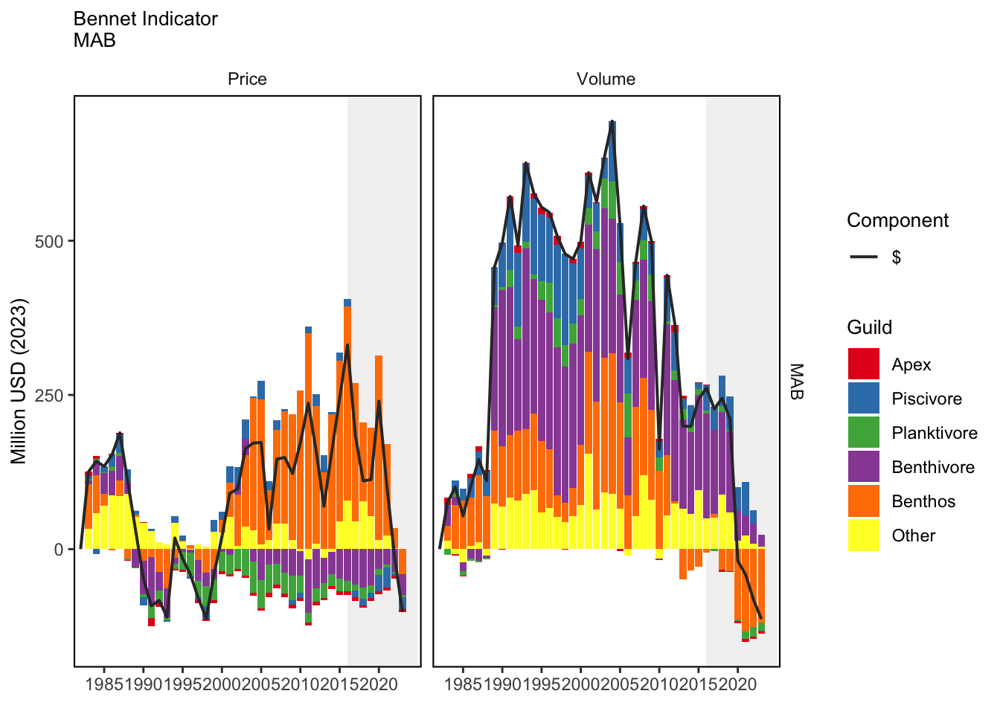
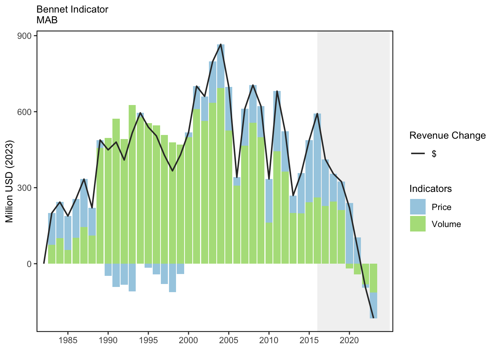
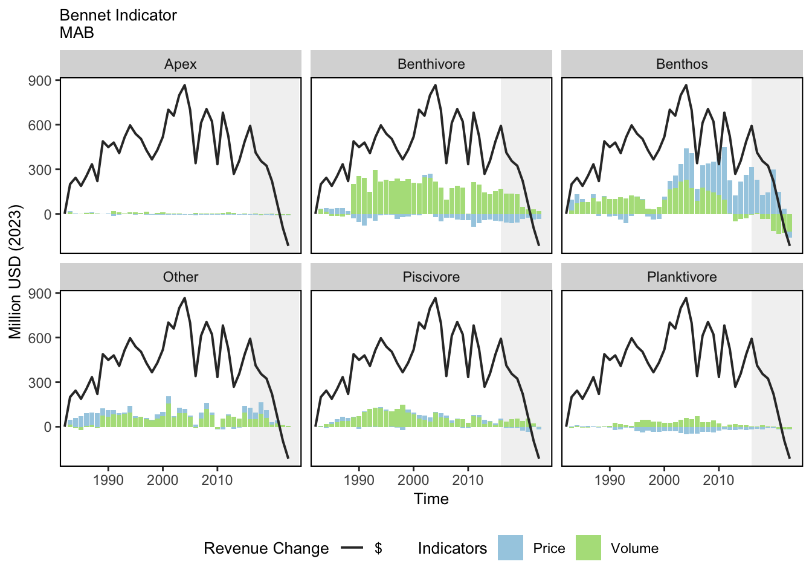
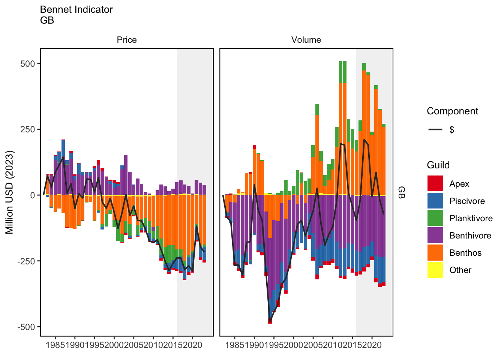
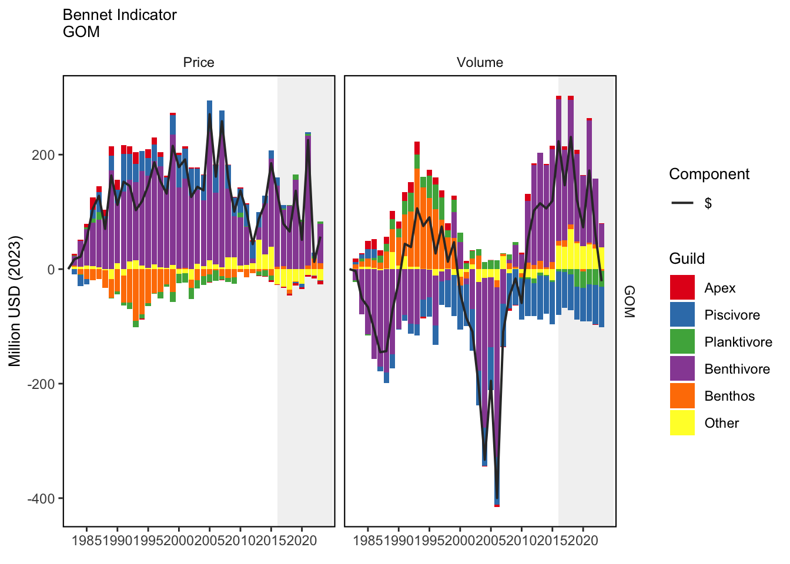
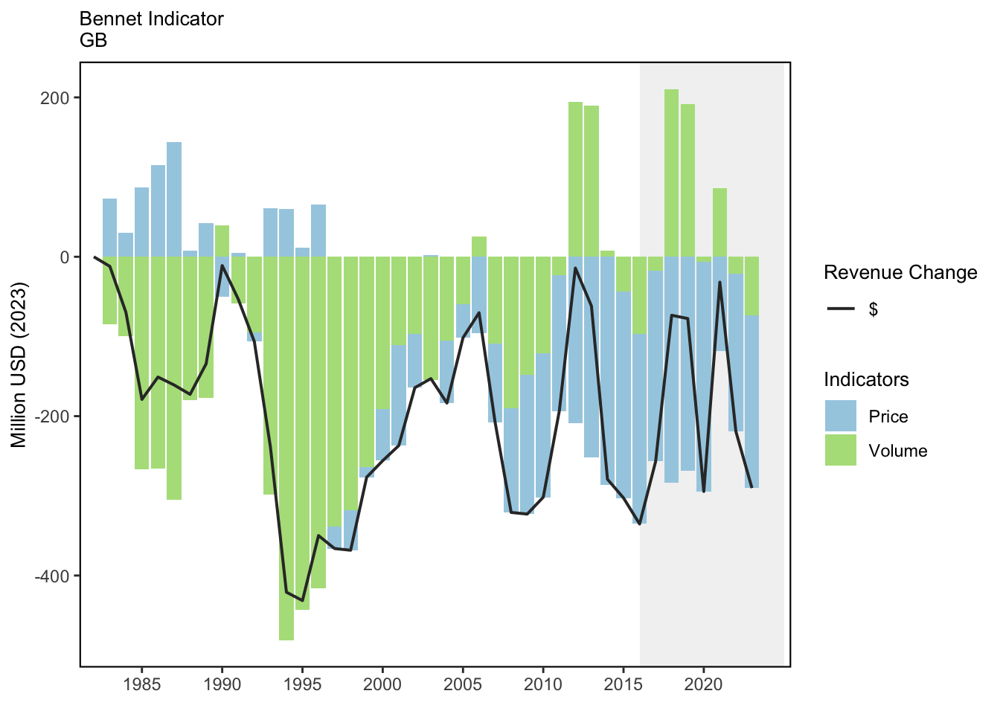
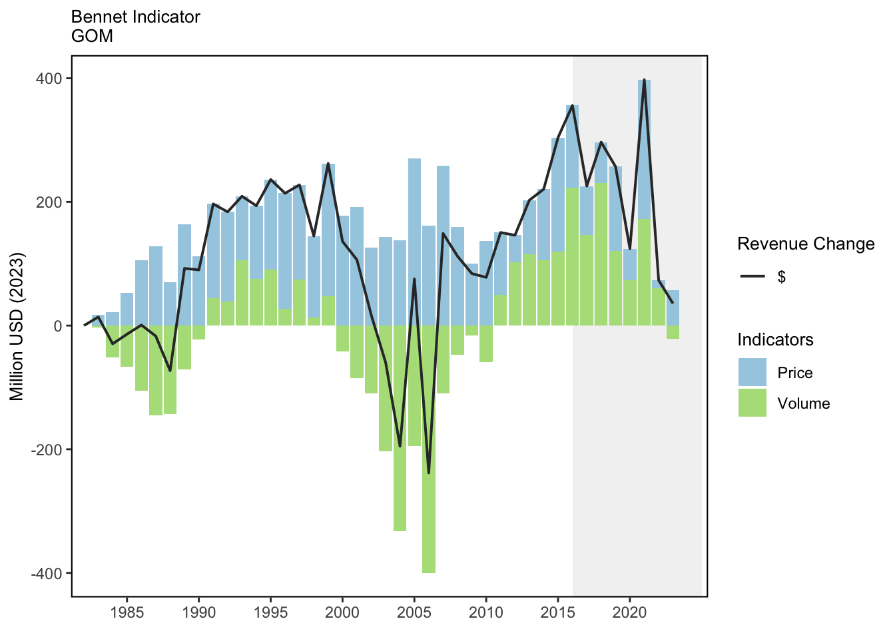
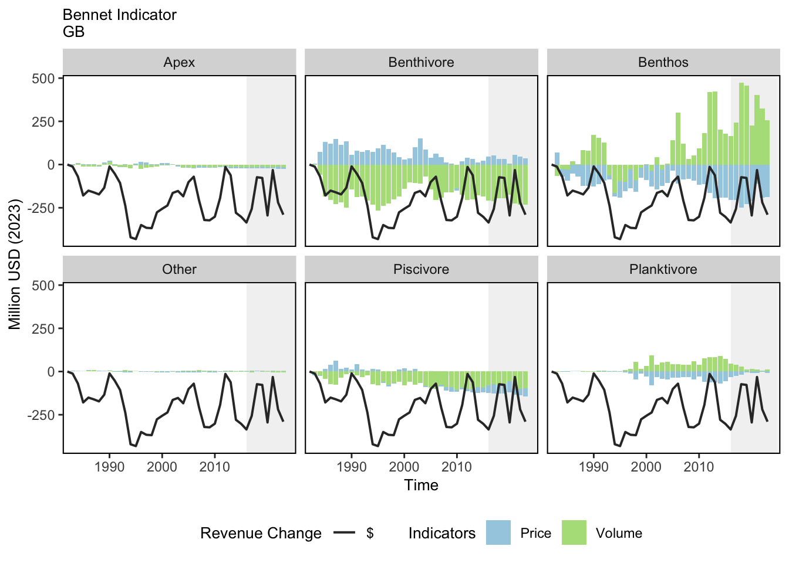
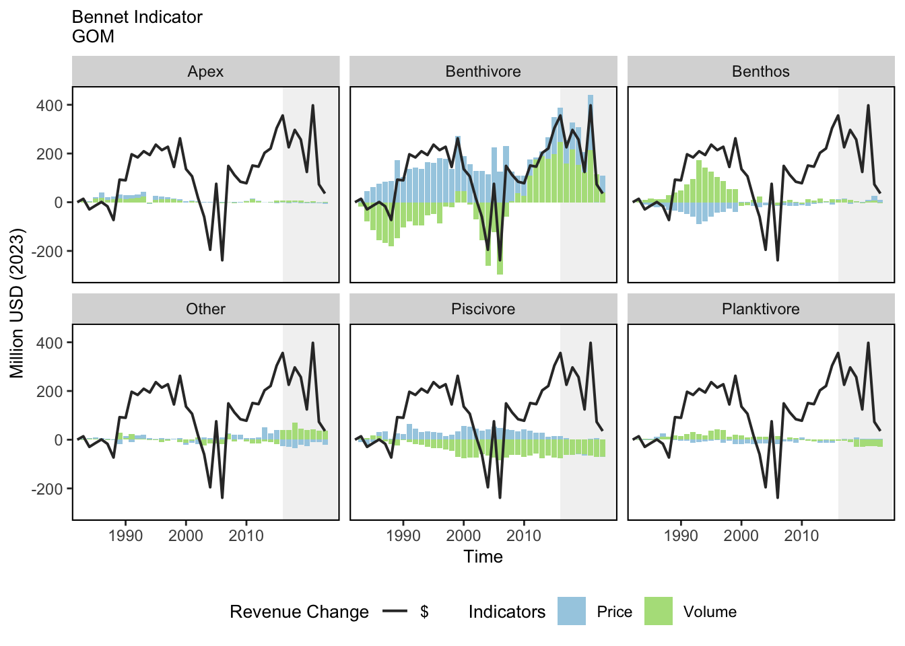

SMART Indicator Report: Bennet Indicator
2 Indicator name
Bennet Indicator
Includes variable(s): Apex Predator Price Indicator - Bennet, Apex Predator Volume Indicator - Bennet, Benthivore Price Indicator - Bennet, Benthivore Volume Indicator - Bennet, Benthos Price Indicator - Bennet, Benthos Volume Indicator - Bennet, Other Price Indicator - Bennet, Other Volume Indicator - Bennet, Piscivore Price Indicator - Bennet, Piscivore Volume Indicator - Bennet, Planktivore Price Indicator - Bennet, Planktivore Volume Indicator - Bennet, Total Price Index - Bennet, Total Revenue Change - Bennet, Total Volume Indicator - Bennet
3 Indicator brief description
The data presented here are changes in revenue ($ real) split into a price indicator and a volume indicator. The sum of the price and the volume indicator is equal to the revenue change relative to a base year, which is 1982.
4 Indicator visualization
Breaking down the VI and PI further for Georges Bank shows that the negative VI is primarily due to changes in the Benthivore and Piscivore categories. Since 2010, there have been large positive gains in volumes for the Benthos category, leading to positive gains in the overall VI during some years. This is likely reflecting improvements in scallop harvests since the area rotation system has been implemented. The PI for Georges Bank shows a generally negative trend, particularly since 2004. Prices for the Benthivores contributed positively to the PI, but declines in the PI for the benthos category were the greatest contributor to the negative PI. All prices are adjusted for inflation, and positive changes means that prices are increasing faster than inflation, while negative prices means that they are not keeping pace with inflation. Gulf of Maine revenue has generally exceeded 1982 levels except for very short time periods, the last being 2004 and 2006. Generally, revenue has been higher due to increasing prices (PI). Since 2010, both increasing volumes (VI) and prices (PI) have contributed to positive revenue change. The VI indicator showed a cyclical type of pattern between 1982 and 2023 with the VI being mostly influenced by the Benthivore and Benthos categories. After 2010, the Benthivore category was the biggest influence on the VI. This was likely due to increases in lobster landings. The PI was positive for the entire time period, and this was due to increase in the Benthivore category. The Piscivore and “Other” categories showed positive prices throughout the time-period, while the Benthos category was generally negative before turning positive after 2015. In the Mid-Atlantic region prices were higher than 1982 levels with the exception of four years prior to 2000. Examination of the VI in more detail showed positive contributions to revenue gains from all categories peaking in 2003, followed by declines in subsequent years. The PI showed a positive trend for most of the years in the time series with the indicator increasing from 1999 through 2016, before declining. The PI gain after 1999 was mainly due to the Benthos category.

5 Indicator documentation
5.1 Are indicators available for others to use (data downloadable)?
Yes
5.1.1 Where can indicators be found?
Data: https://noaa-edab.github.io/ecodata/index.html
Description: https://noaa-edab.github.io/catalog/bennet.html
Technical documentation: https://noaa-edab.github.io/tech-doc/bennet.html
5.1.2 How often are they updated? Are future updates likely?
[need sequential look at datasets for update frequency. Future requires judgement]
5.1.3 Who is the contact?
John Walden (john.walden@noaa.gov); Geret DePiper (geret.depiper@noaa.gov)
5.2 Gather indicator statistics
5.2.1 Units
Indicator | Units |
|---|---|
Apex Predator Price Indicator - Bennet | Million Dollars U.S. |
Apex Predator Volume Indicator - Bennet | Million Dollars U.S. |
Benthivore Price Indicator - Bennet | Million Dollars U.S. |
Benthivore Volume Indicator - Bennet | Million Dollars U.S. |
Benthos Price Indicator - Bennet | Million Dollars U.S. |
Benthos Volume Indicator - Bennet | Million Dollars U.S. |
Other Price Indicator - Bennet | Million Dollars U.S. |
Other Volume Indicator - Bennet | Million Dollars U.S. |
Piscivore Price Indicator - Bennet | Million Dollars U.S. |
Piscivore Volume Indicator - Bennet | Million Dollars U.S. |
Planktivore Price Indicator - Bennet | Million Dollars U.S. |
Planktivore Volume Indicator - Bennet | Million Dollars U.S. |
Total Price Index - Bennet | Million Dollars U.S. |
Total Revenue Change - Bennet | Million Dollars U.S. |
Total Volume Indicator - Bennet | Million Dollars U.S. |
5.2.2 Length of time series, start and end date, periodicity
General overview: The BI, PI and VI are all calculated on an Annual Basis.
Indicator specifics:
Indicator | EPU | StartYear | EndYear | NumYears | MissingYears |
|---|---|---|---|---|---|
Apex Predator Price Indicator - Bennet | GB | 1982 | 2023 | 42 | 0 |
Apex Predator Price Indicator - Bennet | GOM | 1982 | 2023 | 42 | 0 |
Apex Predator Price Indicator - Bennet | MAB | 1982 | 2023 | 42 | 0 |
Apex Predator Volume Indicator - Bennet | GB | 1982 | 2023 | 42 | 0 |
Apex Predator Volume Indicator - Bennet | GOM | 1982 | 2023 | 42 | 0 |
Apex Predator Volume Indicator - Bennet | MAB | 1982 | 2023 | 42 | 0 |
Benthivore Price Indicator - Bennet | GB | 1982 | 2023 | 42 | 0 |
Benthivore Price Indicator - Bennet | GOM | 1982 | 2023 | 42 | 0 |
Benthivore Price Indicator - Bennet | MAB | 1982 | 2023 | 42 | 0 |
Benthivore Volume Indicator - Bennet | GB | 1982 | 2023 | 42 | 0 |
Benthivore Volume Indicator - Bennet | GOM | 1982 | 2023 | 42 | 0 |
Benthivore Volume Indicator - Bennet | MAB | 1982 | 2023 | 42 | 0 |
Benthos Price Indicator - Bennet | GB | 1982 | 2023 | 42 | 0 |
Benthos Price Indicator - Bennet | GOM | 1982 | 2023 | 42 | 0 |
Benthos Price Indicator - Bennet | MAB | 1982 | 2023 | 42 | 0 |
Benthos Volume Indicator - Bennet | GB | 1982 | 2023 | 42 | 0 |
Benthos Volume Indicator - Bennet | GOM | 1982 | 2023 | 42 | 0 |
Benthos Volume Indicator - Bennet | MAB | 1982 | 2023 | 42 | 0 |
Other Price Indicator - Bennet | GB | 1982 | 2023 | 42 | 0 |
Other Price Indicator - Bennet | GOM | 1982 | 2023 | 42 | 0 |
Other Price Indicator - Bennet | MAB | 1982 | 2023 | 42 | 0 |
Other Volume Indicator - Bennet | GB | 1982 | 2023 | 42 | 0 |
Other Volume Indicator - Bennet | GOM | 1982 | 2023 | 42 | 0 |
Other Volume Indicator - Bennet | MAB | 1982 | 2023 | 42 | 0 |
Piscivore Price Indicator - Bennet | GB | 1982 | 2023 | 42 | 0 |
Piscivore Price Indicator - Bennet | GOM | 1982 | 2023 | 42 | 0 |
Piscivore Price Indicator - Bennet | MAB | 1982 | 2023 | 42 | 0 |
Piscivore Volume Indicator - Bennet | GB | 1982 | 2023 | 42 | 0 |
Piscivore Volume Indicator - Bennet | GOM | 1982 | 2023 | 42 | 0 |
Piscivore Volume Indicator - Bennet | MAB | 1982 | 2023 | 42 | 0 |
Planktivore Price Indicator - Bennet | GB | 1982 | 2023 | 42 | 0 |
Planktivore Price Indicator - Bennet | GOM | 1982 | 2023 | 42 | 0 |
Planktivore Price Indicator - Bennet | MAB | 1982 | 2023 | 42 | 0 |
Planktivore Volume Indicator - Bennet | GB | 1982 | 2023 | 42 | 0 |
Planktivore Volume Indicator - Bennet | GOM | 1982 | 2023 | 42 | 0 |
Planktivore Volume Indicator - Bennet | MAB | 1982 | 2023 | 42 | 0 |
Total Price Index - Bennet | GB | 1982 | 2023 | 42 | 0 |
Total Price Index - Bennet | GOM | 1982 | 2023 | 42 | 0 |
Total Price Index - Bennet | MAB | 1982 | 2023 | 42 | 0 |
Total Revenue Change - Bennet | GB | 1982 | 2023 | 42 | 0 |
Total Revenue Change - Bennet | GOM | 1982 | 2023 | 42 | 0 |
Total Revenue Change - Bennet | MAB | 1982 | 2023 | 42 | 0 |
Total Volume Indicator - Bennet | GB | 1982 | 2023 | 42 | 0 |
Total Volume Indicator - Bennet | GOM | 1982 | 2023 | 42 | 0 |
Total Volume Indicator - Bennet | MAB | 1982 | 2023 | 42 | 0 |
5.2.3 Spatial location, scale and extent
General overview: The BI, PI and VI are calculated for the GB, GOM and MAB EPU separately
Indicator specifics:
Indicator | EPU |
|---|---|
Apex Predator Price Indicator - Bennet | GB |
Apex Predator Price Indicator - Bennet | GOM |
Apex Predator Price Indicator - Bennet | MAB |
Apex Predator Volume Indicator - Bennet | GB |
Apex Predator Volume Indicator - Bennet | GOM |
Apex Predator Volume Indicator - Bennet | MAB |
Benthivore Price Indicator - Bennet | GB |
Benthivore Price Indicator - Bennet | GOM |
Benthivore Price Indicator - Bennet | MAB |
Benthivore Volume Indicator - Bennet | GB |
Benthivore Volume Indicator - Bennet | GOM |
Benthivore Volume Indicator - Bennet | MAB |
Benthos Price Indicator - Bennet | GB |
Benthos Price Indicator - Bennet | GOM |
Benthos Price Indicator - Bennet | MAB |
Benthos Volume Indicator - Bennet | GB |
Benthos Volume Indicator - Bennet | GOM |
Benthos Volume Indicator - Bennet | MAB |
Other Price Indicator - Bennet | GB |
Other Price Indicator - Bennet | GOM |
Other Price Indicator - Bennet | MAB |
Other Volume Indicator - Bennet | GB |
Other Volume Indicator - Bennet | GOM |
Other Volume Indicator - Bennet | MAB |
Piscivore Price Indicator - Bennet | GB |
Piscivore Price Indicator - Bennet | GOM |
Piscivore Price Indicator - Bennet | MAB |
Piscivore Volume Indicator - Bennet | GB |
Piscivore Volume Indicator - Bennet | GOM |
Piscivore Volume Indicator - Bennet | MAB |
Planktivore Price Indicator - Bennet | GB |
Planktivore Price Indicator - Bennet | GOM |
Planktivore Price Indicator - Bennet | MAB |
Planktivore Volume Indicator - Bennet | GB |
Planktivore Volume Indicator - Bennet | GOM |
Planktivore Volume Indicator - Bennet | MAB |
Total Price Index - Bennet | GB |
Total Price Index - Bennet | GOM |
Total Price Index - Bennet | MAB |
Total Revenue Change - Bennet | GB |
Total Revenue Change - Bennet | GOM |
Total Revenue Change - Bennet | MAB |
Total Volume Indicator - Bennet | GB |
Total Volume Indicator - Bennet | GOM |
Total Volume Indicator - Bennet | MAB |
5.3 Are methods clearly documented to obtain source data and calculate indicators?
Yes
5.3.1 Can the indicator be calculated from current documentation?
For information regarding processing of CFDBS, please see Comland methods. The Comland dataset containing seafood landings data was subsetted to US landings after 1964 where revenue was \(\ge\) 0 for each Ecological Production Unit (i.e. Mid-Atlantic Bight, Georges Bank, and Gulf of Maine). Each EPU was run in an individual R script, and the code specific to Georges Bank is shown here.
Revenue earned by harvesting resources from a Large Marine Ecosystem (LME) at time t is a function of both the quantity landed of each species and the prices paid for landings. Changes in revenue between any two years depends on both prices and quantities in each year, and both may be changing simultaneously. For example, an increase in the harvest of higher priced species, such as scallops can lead to an overall increase in total revenue from an LME between time periods even if quantities landed of other species decline. Although measurement of revenue change is useful, the ability to see what drives revenue change, whether it is changing harvest levels, the mix of species landed, or price changes provides additional valuable information. Therefore, it is useful to decompose revenue change into two parts, one which is due to changing quantities (or volumes), and a second which is due to changing prices. In an LME, the quantity component will yield useful information about how the species mix of harvests are changing through time. A Bennet indicator (BI) is used to examine revenue change between 1964 and 2015 for two major LME regions. It is composed of a volume indicator (VI), which measures changes in quantities, and a price indicator (PI) which measures changes in prices. The Bennet (1920) indicator (BI) was first used to show how a change in social welfare could be decomposed into a sum of a price and quantity change indicator (Cross and Färe 2009). It is called an indicator because it is based on differences in value between time periods, rather than ratios, which are referred to as indices. The BI is the indicator equivalent of the more popular Fisher index (Balk 2010), and has been used to examine revenue changes in Swedish pharmacies, productivity change in U.S. railroads (Lim and Lovell 2009), and dividend changes in banking operations (Grifell-Tatjé and Lovell 2004). An attractive feature of the BI is that the overall indicator is equal to the sum of its subcomponents (Balk 2010). This allows one to examine what component of overall revenue is responsible for change between time periods. This allows us to examine whether changing quantities or prices of separate species groups are driving revenue change in each EPU between 1964 and 2015. Revenue in a given year for any species group is the product of quantity landed times price, and the sum of revenue from all groups is total revenue from the LME. In any year, both prices and quantities can change from prior years, leading to total revenue change. At time t, revenue (R) is defined as \[R^{t} = \sum_{j=1}^{J}p_{j}^{t}y_{j}^{t},\] where \(p_{j}\) is the price for species group \(j\), and \(y_{j}\) is the quantity landed of species group \(j\). Revenue change between any two time periods, say \(t+1\) and \(t\), is then \(R^{t+1}-R^{t}\), which can also be expressed as: \[\Delta R = \sum_{j=1}^{J}p_{j}^{t+1}y_{j}^{t+1}-\sum_{j=1}^{J}p_{j}^{t}y_{j}^{t}.\] This change can be decomposed further, yielding a VI and PI. The VI is calculated using the following formula (Georgianna, Lee, and Walden 2017): \[VI = \frac{1}{2}(\sum_{j=1}^{J}p_{j}^{t+1}y_{j}^{t+1} - \sum_{j=1}^{J}p_{j}^{t+1}y_{j}^{t} + \sum_{j=1}^{J}p_{j}^{t}y_{j}^{t+1} - \sum_{j=1}^{J}p_{j}^{t}y_{j}^{t})\] The price indicator (PI) is calculated as follows: \[PI = \frac{1}{2}(\sum_{j=1}^{J}y_{j}^{t+1}p_{j}^{t+1} - \sum_{j=1}^{J}y_{j}^{t+1}p_{j}^{t} + \sum_{j=1}^{J}y_{j}^{t}p_{j}^{t+1} - \sum_{j=1}^{J}y_{j}^{t}p_{j}^{t})\] Total revenue change between time \(t\) and \(t+1\) is the sum of the VI and PI. Since revenue change is being driven by changes in the individual prices and quantities landed of each species group, changes at the species group level can be examined separately by taking advantage of the additive property of the indicator. For example, if there are five different species groups, the sum of the VI for each group will equal the overall VI, and the sum of the PI for each group will equal the overall PI.
5.4 Are indicator underlying source data linked or easy to find?
Derived CFDBS data are available for this analysis (see Comland).
5.4.1 Where are source data stored?
Data used in the Bennet Indicator were derived from the Comland data set; a processed subset of the Commercial Fisheries Database System (CFDBS). The derived Comland data set is available for download here.
5.4.2 How/by whom are source data updated? Are future updates likely?
Brandon Beltz, Brandon.Beltz@noaa.gov
[likelihood of source data updates requires judgement, enter by hand]
6 Indicator analysis/testing or history of use
6.1 What decision or advice processes are the indicators currently used in?
The Bennet (1920) indicator (BI) was first used to show how a change in social welfare could be decomposed into a sum of a price and quantity change indicator ([117]). It is called an indicator because it is based on differences in value between time periods, rather than ratios, which are referred to as indices. The BI is the indicator equivalent of the more popular Fisher index ([118]), and has been used to examine revenue changes in Swedish pharmacies, productivity change in U.S. railroads ([119]), and dividend changes in banking operations [120]. An attractive feature of the BI is that the overall indicator is equal to the sum of its subcomponents [118]. This allows us to examine whether increasing (decreasing) volumes, increasing (decreasing) prices, or some combination of the two is responsible for revenue change between time periods. The volume and price indicators can be further decomposed allowing us to examine the extent to which changing quantities or prices of each output is driving revenue change. Revenue in an EPU in a given year is the product of quantities landed and prices received from all species groups (or guilds) within the EPU. The change in revenue between any two time points can be decomposed into a volume indicator (VI) and a price indicator (PI). The overall BI is the sum of the VI and PI, and is equal to the overall revenue change. Since revenue change is being driven by changes in the individual prices and quantities landed of each species group within an EPU, changes at the EPU level can be examined separately by taking advantage of the additive property of the indicator. For example, if there are five different species groups, the sum of each group’s VI will equal the overall EPU VI, and likewise, the sum of the PI for each group will equal the overall PI for the EPU.
6.2 What implications of the indicators are currently listed?
In the first 20 years of the series, this was due to declining volumes, while in the later part of the series it was due to both declining volumes and prices compared to 1982. In terms of volumes, the positive gains in the Benthos category was offset by declines in the Benthivore category. This reflects a shift to an EPU whose value is being generated from shellfish rather than finfish. Since 2007 increases in the Gulf of Maine VI for the Benthivore category has increased substantially, and has been the biggest contributor to the positive VI. Along with this gain, the PI for the Benthivore category has been positive for the entire time period. The increase in the Benthivore VI is thought to have been caused by increasing lobster harvests in the Gulf of Maine. Positive prices and volumes for this category contributed to the overall revenue gain seen, particularly after 2007. For the Gulf of Maine and Georges Bank region, the decomposed VI shows that these two regions are becoming more reliant on shellfish for their landings, which likely increases risk for revenue losses if these volumes can’t be sustained. The overall BI for Gorges Bank was negative for all years in the time series, which is troubling because it shows that except for two years this particular EPU never achieved the same level of performance in terms of revenue as in 1982. Although the Mid-Atlantic region showed declining revenue trends since 2016, revenue from harvested species is still greater than 1982 levels. The decline in revenue since 2016 is due to both declining prices and volumes. Declining volumes were due to the Benthos, Benthivore and “Other” category, while declining prices were due to the Benthos category. The declining Benthos category may be partially caused by decreases in surfclam and ocean quahogs in the southern part of their range as harvest have shifted northward.
6.3 Do target, limit, or threshold values already exist for the indicator?
[Fill by hand; if not in key results or implications, likely does not exist]
6.4 Have the indicators been tested to ensure they respond proportionally to a change in the underlying process?
[Fill by hand; if not in introduction, key results, or implications, likely not tested]
7 Comments
[Fill below by hand once above data complete]
7.1 Additional potential links to management in addition to uses listed above
7.2 What additional work would be needed for the Council to use the indicator?
7.3 What issues are caused if there is a gap or delay in data underlying the indicator